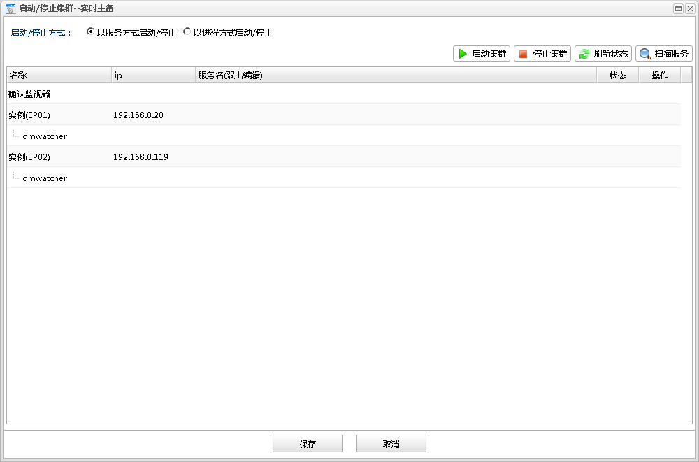

启动集群
启动集群 刷新状态
刷新状态 扫描服务
扫描服务从数据库监控面板中的集群分组的操作下拉菜单中点击启动/停止集群可以打开启动/停止集群对话框，启动/停止集群用于启动停止集群。
数据守护和读写分离集群主要包括确认监视器,数据库实例,dmwatcher的启动和停止，如下图所示：

DMDSC集群主要包括数据库实例,dmcss,dmasm的启动和停止，如下图所示：
启动/停止集群包括两种方式:
启动时可以根据需要，按服务方式启动，或按进程方式启动，如果以服务方式启动，必须是已经注册好服务。停止时必须按照原本集群启动的方式停止，如果集群是以服务方式启动的，就应该选择以服务方式停止；如果集群是以进程方式启动，则应该选择以进程方式停止，否则无法正常停止集群。
以服务方式启动/停止，即根据给定的服务名，来启动/停止集群，数据守护和读写分离集群以服务方式启动/停止如下图所示:
以服务方式启动/停止功能列表
| 操作 | 说明 |
|---|---|
| 启动集群 |
按照给定的服务名启动集群。 |
| 停止集群 | 按照给定的服务名停止集群。 |
| 刷新状态 |
刷新集群各组件的状态。 |
| 扫描服务 |
按照DM服务注册规则，自动扫描出集群已经注册的服务。 |
集群服务信息列表
| 字段 | 说明 |
|---|---|
| 名称 | 列出集群包含的组件，包括确认监视器，实例以及每个实例对应dmwatcher。 |
| IP | 集群组件所在的主机IP，实例与实例对应的dmwatcher在相同的主机上，所以只需配置实例的主机IP,且实例的主机IP在添加集群时已确定，这里不能修改。另外，如果需要启动/停止确认监视器，则需要指定确认监视器所在的主机 |
| 服务名(双击编辑) | 集群组件的已注册的对应的服务名称。可通过扫描服务自动扫描填充。双击编辑，可以点击...打开服务选择对话框,选择对应的集群组件的服务名。 |
| 状态 | 集群组件的启动/停止状态。在确定IP和服务名时，才可以显示出状态信息。 |
| 操作 | 单独操作集群的每个组件，如果对应组件状态是“停止”，则可以启动该组件的服务，如果状态是”启动“，则可以停止该组件的服务。在确定IP和服务名时，才可以显示出操作信息。 |
DMDSC集群以服务方式启动/停止的功能列表和服务信息列表与数据守护和读写分离集群相同，只是需要配置的是数据库实例,dmcss,dmasm的服务来启动/停止。
以进程方式启动/停止，即根据给定的bin路径和ini路径，来启动/停止集群，数据守护和读写分离集群如下图所示:
以进程方式启动/停止功能列表
| 操作 | 说明 |
|---|---|
| 启动集群 |
按照给定的bin路径和ini路径启动集群。 |
| 停止集群 | 按照给定的bin路径和ini路径停止集群。 |
| 刷新状态 |
刷新集群各组件的状态。 |
集群进程信息列表
| 字段 | 说明 |
|---|---|
| 名称 | 列出集群包含的组件，包括确认监视器，实例以及每个实例对应dmwatcher。 |
| IP | 集群组件所在的主机IP，实例与实例对应的dmwatcher在相同的主机上，所以只需配置实例的主机IP,且实例的主机IP在添加集群时已确定，这里不能修改。另外，如果需要启动/停止确认监视器，则需要指定确认监视器所在的主机 |
| bin路径(双击可编辑) | 集群组件的对应的bin路径，即执行文件所在目录。实例与实例对应的dmwatcher在相同的主机上，且建议使用同一套执行文件，所以执行配置实例的bin路径。 双击编辑，可以点击...打开文件选择对话框,选择对应的集群组件的bin路径。 |
| ini路径(双击可编辑) | 集群组件的对应的ini路径。双击编辑，可以点击...打开文件选择对话框,选择对应的集群组件的ini路径。 |
| dmdcr.ini路径(双击可编辑) | 仅DMDSC集群时才显示，组件的对应的dmdcr.ini路径。双击编辑，可以点击...打开文件选择对话框,选择对应的集群组件的dmdcr.ini路径。 |
| 状态 | 集群组件的启动/停止状态。在确定IP，bin路径以及ini路径或dmdcr.ini路径时，才可以显示出状态信息。 |
| 操作 | 单独操作集群的每个组件，如果对应组件状态是“停止”，则可以启动该组件的服务，如果状态是”启动“，则可以停止该组件的服务。在确定IP，bin路径以及ini路径或dmdcr.ini路径时，才可以显示出操作信息。 |
DMDSC集群以服务方式启动/停止的功能列表和服务信息列表与数据守护和读写分离集群相同，只是需要配置的是数据库实例,dmcss,dmasm的bin路径和ini路径来启动/停止。